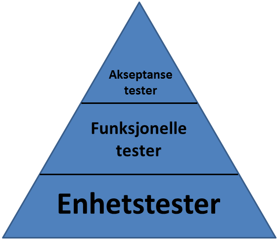

.center.middle # Test-drevet Webutvikling _.tt[ivar.conradi.osthus@iteraconsulting.no],_<br /> _.tt[kris-mikael.krister@iteraconsulting.no]_ --- # Introduction av Itera Consulting Bla bla.. her kommer tommy med sine slides om selskapet... --- # Agenda 1. Testing intro - Hvorfor tester vi? - Ulike Testtyper - Flere nivåer med testing 2. Play framework - Introduksjon til rammeverket - Praktisk eksempel (følger med på minnestick) - Rask presentasjon av Selenium og Selenese - Vise ulike testtyper - Installasjon og oppsett av første prosjekt 3. Test-driven development - Introduksjon til TDD - Kodeeksempel 4. Test-drevet webutvikling - Introduksjon - Introdusere oppgaven - Teste kontrollere - Teste modeller - Teste perisistering - Teste validering - Teste viewet --- # Testing intro Et vakkert testbilde her... --- # Hvorfor tester vi? - Sikre at koden *løser problemet* vårt - Sikre at koden *ikke* gjør noe annet - Beskytte koden mot **bieffekter** ved fremtidige endringer - Kan refaktorere på en tryggere måte - Fungerer som dokumentasjon - Gir økt kodekvalitet - Finner bugs tidligere (billigere å rette i dag enn om 2 uker) - Mindre debugging - White-box vs. black-box ### God testpraksis - Automatiserte tester - Testene kjøres ved insjekk av ny kode - Testene er raske - Testene kan kjøres i vilkårlig rekkefølge --- # Enhetstester.red.bold[*] .footnote[.red.bold[*] Tilhører kategorien white-box testing] <div class="box happy"> Validerer at *isolerte enheter* i applikasjonen fungerer slik de skal. </div> - Tester små biter av koden - Tester *betinget* funksjonalitet - *Isolerte* tester. - "*mocker*" avhengigheter (f.eks in-mem-db) - Dersom koden er vanskelig å teste? Et tegn på dårlig design.. <div class="code"> public class TestFoobar{ @Before public void setUp() throws Exception { // Kode som kjøres før hver test } @Test public void shouldSumCorrectly() { assertEquals(2, 1+2); } } </div> --- # Funksjonelle tester.red.bold[*] .footnote[.red.bold[*] Form for black-box testing] <div class="box happy"> Fokuserer på å teste en spesifikk funksjon i applikasjonen. </div> ### Hvorfor? - Verifiserer at grensesnitt følger kontrakten. - Kan fortelle oss at "noe i koden" brakk - Teste koden på tilsvarende måte som den blir konsumert. ### Eksempler i WEB-app - Teste at kontrollerene håndterer forespørsler korrekt. - Ble brukeren redirigert til riktig side? - Er brukeren autentisert korrekt? --- # Akseptansetester.red.bold[*] .footnote[.red.bold[*] Black-box testing] <div class="box happy"> Sikre at systemet tilfredstiller de funksjonelle kravene som er satt til løsningen. </div> ### Hvorfor? - Tester systemetet fra *brukerens* perspektiv - Høy-nivå tester som verifiserer hele brukerhistorier - Sikre at systemet løser oppgavene vi ønsker at det skal løse, uten å fokuserer på hvordan oppgavene løses. ### Eksempler i en WEB-applikasjon - Verifisere at en HTML-form finnes. - Verifisere at det er mulig å legge til en kommentar. - Verifisere at brukeren havner på forsiden etter å lagt til en kommentar. --- .center # Flere nivåer med testing  --- # Play framework <div class="happy box"> .label[Fordeler] - Lært fra andres feil - Inkluderer hele webstacken - Følger _ikke_ servlet-spec - Automatisk rekompilering - Konvensjon over konfigurasjon </div> <div class="angry box"> .label[Ulemper] - Begrenset community </div> .center[Så hvorfor har vi valgt Play i dag?] --- # Plays arkitektur .center <img style="zoom: 0.87" src="images/play_architecture.png" /> --- # Demo <div class="happy box"> .label[Hva skal til for å starte en webapp i Play?] 1. Installer Java 1. Last ned og unzip .tt[play.zip] 1. Fra kommandolinje: .tt[play new minApplikasjon] 1. .tt[play run minApplikasjon] </div> <div class="notes"> * echo $java_home * which play * play new hello_world * tree * forklar tingene, spesielt MVC og test </div> --- # Oppsett av play <div class="moody box"> .label[Win] - Installer .tt[java] hvis du ikke har JDK fra før (ligger på usb) - Kopier mappa .tt[play] til .tt[c:\dev\play] (fra usb) - Startmeny » Run/Kjør » Skriv .tt[cmd] (og trykk enter) - Skriv .tt[cd c:\dev\play] (og trykk enter) - Skriv .tt[play] (og trykk enter), får du ASCII-art tilbake så er alt OK </div> <div class="happy box"> .label[Linux/Mac] - Installer .tt[java] hvis du ikke har JDK fra før (installasjonsbeskrivelse ligger på usb) - Kopier .tt[play] til hjemmekatalog (fra usb) - Åpne en terminal, .tt[cd play] - Kjør .tt[./play], får du ASCII-art tilbake så er alt OK </div> <div class="angry box"> .label.problem[Problemer?] - Java må være installert, Play leter etter java på path eller gjennom variablen .tt[JAVA_HOME] - Python-issues » team opp med en annen - Andre problemer? » Hør med en av oss </div> --- # Test-driven development (TDD) ### Hva? 1. Skriv en enhetstest, som feiler 2. Skriv kode som fikser testen 3. Refaktorer koden 4. Repeter fra 1. til du er ferdig. ### Hvorfor? - Sikrer at vi tester koden vår - Ikke disiplinert nok? - Mangel på tid, fredag ettermiddag.. etc - Vi har jo *manuelt* testet at koden virker?? - Verifikasjon av oppførsel - Dokumentasjon - Testbar kode --- .cente.middle # Hovedpoenget med TDD er ikke å skrive testene først. <div class="box happy center"> **Iterere over designet konstant, hvor vi stadig gjør små forbedringer.** </div> --- .cente # TDD prosessen <img src="images/tdd.png" /> .small[http://en.wikipedia.org/wiki/File:Test-driven_development.PNG] --- # Test-drevet webutvikling <div class="moody box"> .label[Utfordringer (uten hjelp fra webrammeverk)] * Lite kontroll på klientsiden * Mange avhengigheter nødvendig for å få startet en webapplikasjon » vanskelig å finne generelle løsninger * Integrasjon med database, nettverk, webtjenester </div> --- # Introduksjon til oppgave <div class="happy box"> .label[Hva vi skal] 1. "Todo"-applikasjon som - Gir mulighet for å legge til oppgaver - Lister opp oppgavene som er lagt til 1. Funksjonaliteten skal drives frem ved å skrive tester først (TDD) 1. Play brukes til å kjapt få opp et webutviklingsmiljø med testrammeverk på plass 1. Enhetsteste modeller, funksjonell testing kontrollere, samt seleniumtesting av grensesnitt </div> <div class="angry box"> .label[Hva vi _ikke_ skal] - Fokusere på utseende - Fokusere på mest mulig funksjonalitet - Lære detaljer i Play - Bruke JavaScript, eller teste JavaScript </div> --- # Opprett Todo! <div class="moody box"> 1. Start » Kjør/Run » .tt[cmd] 1. .tt[cd c:\dev\play] 1. .tt[play new todo] 1. .tt[play run todo] </div> --- # Iterasjon 1 10 min - Første funksjonelle test (mye hjelp). Må lage controller-pakke i test + test-klassen. Lage en "test" klasse som heter TodoFunctionalTest --- # Iterasjon 2 <div class="moody box"> .label[Hva skal implementeres?] * Når jeg åpner .tt[/todo/add] skal tittel på siden være "Legg til en todo" </div> <div class="moody box"> .label[Tips] - Selenium egner seg til testing av HTML-respons, opprett derfor .tt[test/Todo.test.html] - Ta en titt på Selenese sin .tt[assertTitle()] - Kjør testen via .tt[http://localhost:9000/@tests] - Fiks feilende test (opprett view i .tt[app/views/todo/add.html]) </div> // fil: test/Application.test.html #{selenium} // Open the home page, and check that no error occured open('/') assertNotTitle('Application error') #{/selenium} --- # Iterasjon 3 <div class="moody box"> .label[Hva skal implementeres?] - Når jeg åpner .tt[/todo/add] skal jeg bli presentert med en form som har input-elementer for .tt["beskrivelse"] og .tt["prioritet"] - Formen skal poste til .tt[/todo/create] og ha en submit-knapp </div> <div class="moody box"> .label[Tips] - Selenium egner seg til testing av HTML-respons, så fortsett på .tt[test/Todo.test.html] - .tt[assertElementPresent('css=cssSelector')] kan brukes til å kreve at HTML-elementer er tilstede - Kjør testen via .tt[http://localhost:9000/@tests] - Fiks feilende test (oppdater view) </div> .html <form action="/my/action" method="POST" id="myForm" class="aForm"></form> Et form-element som over kan hentes med følende css-selectors: .html "form", "form.aForm", "#myForm", "form#myForm", "form[method=POST]" --- # Iterasjon 4 <div class="moody box"> .label[Hva skal implementeres?] - Klassen .tt[models.Todo] skal kunne opprettes med feltene .tt["beskrivelse"] (description) og .tt["prioritet"] (priority). Dette skal lagres i instansen som instansvariabler. </div> <div class="moody box"> .label[Tips] 1. todo: forklar public-variabler i Play 1. todo: forklar Todo-modellen 1. Lag en unit-test som lager en .tt["Todo"] og verifiserer at properties blir satt 1. Se at testen feiler 1. Opprett klassen .tt[models.Todo] og implementer nødvendig funksjonalitet i klassens konstruktør </div> --- # Iterasjon 5 <div class="moody box"> .label[Hva skal implementeres?] Instanser av modellen - inkludert alle datafelter - skal kunne lagres til database. </div> <div class="moody box"> .label[Tips] - Opprett unit-test .tt[test/models/TodoTest.java] som lager en .tt[Todo], kaller .tt[save()] på instansen og ser om den har blitt lagret i databasen. - Fiks feilende test ved å extende modellen med "Model", og annoter klassen med .tt[@Entity] - Husk at tester skal kjøres i isolasjon, bruk JUnits .tt[@Before] og .tt[Fixtures.deleteDatabase()] </div> @Test // JUnit public void shouldPersistTodo() { // opprett en todo og deleger lagring til Hibernate ved å kalle save() // hent alle todos med Todo.findAll() // bruk assertEquals() til å verifisere at antall todos er som forventet } // Modell: @Entity // Hibernate-annotering public class Todo extends Model { // Model er en hjelpeklasse fra Play // ... } --- # Iterasjon 6 Test-navn: shouldPostNewTodo todo: POST til todo/create med 2 params HashMap --- # Iterasjon 7 TestNavn: shouldRedirectAfterStoringTodo --- # Iterasjon 8 TestNavn: shouldRequireDescription --- # Iterasjon 9 TestNavn: shouldRequirePriority --- # Iterasjon 10 TestNavn: shouldNotAllowPriorityLargerThan3 --- # Iterasjon 11 <div class="moody box"> .label[Hva skal implementeres?] * Når det er feilmeldinger i skjemaet skal disse vises til brukeren i en liste </div> <div class="moody box"> .label[Tips] * .tt[http://www.playframework.org/documentation/1.2.4/tags#errors] </div>